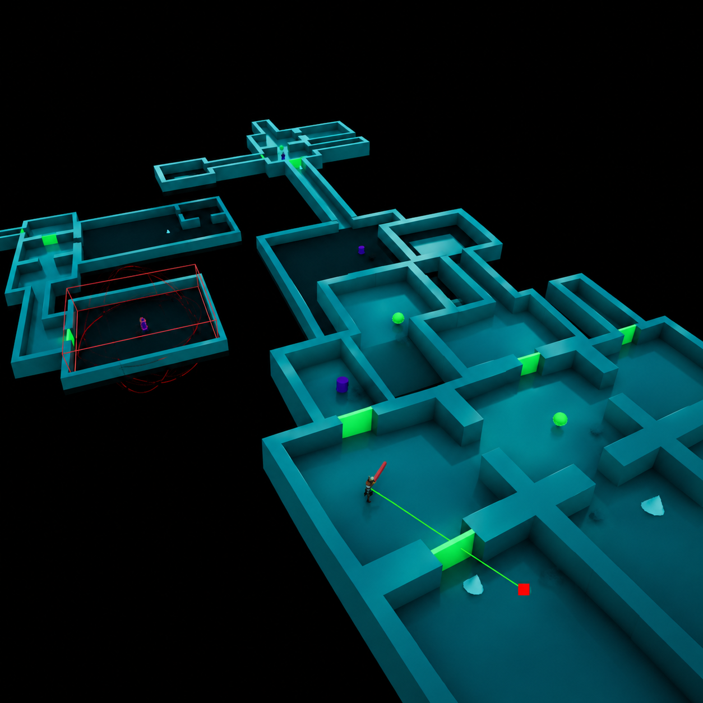

PORTFOLIO / GAME DEVELOPMENT
Enzo
Campanella.
Gameplay Programmer · Spécialisation IA
Concevoir des systèmes de gameplay robustes, modulaires et maintenables.
Je développe des mécaniques et des systèmes sous Unreal Engine 5, avec une attention particulière à l'architecture Blueprint, à l'intelligence artificielle et à l'expérience joueur.
 GAMEPLAY PROGRAMMER / UE5
GAMEPLAY PROGRAMMER / UE5
01 / COMPÉTENCES
Concevoir. Structurer. Développer.
Une approche centrée sur les systèmes de gameplay, leur architecture et leur évolution.
Gameplay AI
Blueprint Architecture
02 / PROJETS
Mes réalisations.
Cinq projets, cinq approches de la conception et du développement de systèmes de jeu.
Vorace
Twin-stick shooter post-bactériologique explorant des comportements ennemis et des systèmes pilotés par les données.
Découvrir le projet Pouss'Plouf !
Pouss'Plouf !
Pouss'Plouf !
Party game 2 contre 2 reposant sur des déplacements physiques, l'inertie et les collisions.
2
Manettes
4
Joueurs
30 m+
Mur de projection
 Prototype CRPG
Prototype CRPG
Prototype CRPG
Prototype de déplacement au clic inspiré des CRPG, utilisant la navigation et la prévisualisation des trajectoires.
1
Clic pour se déplacer
2
Vues caméra
 Monster Hunter JDR
Monster Hunter JDR
Monster Hunter — JDR
Adaptation de l'expérience de chasse en jeu de rôle sur table, avec des systèmes de combat, de progression et de craft.
4
Armes
4
points d'action max par tour
4 655
Lignes de documentation

PROCEDURAL
GAMEPLAY PROTOTYPE
Prototype procédural
Prototype explorant la génération procédurale d'un donjon et l'intégration d'un système de combat.
3
Étages
60
Salles générées
7
Modèles de salles
03 / CONTACT
Échangeons autour du gameplay.
Recherche de stage et opportunités en Gameplay Programming, Unreal Engine 5 et IA.